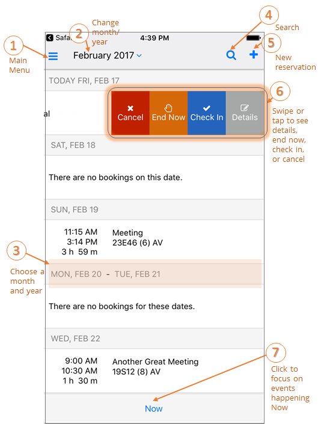

Attend a Meeting
Any events you have been invited to appear on your calendar on the home page of the EMS Mobile App.
Once you've logged in, you can follow the tips below to interact with your calendar and see your events. Your calendar shows only current and upcoming events.

Check In to a Meeting
You can Check In to an event in one of two ways:
- From the Calendar on the Home page, locate the event you want to check in to.
- If it is with in the pre-determined check-in time period, a Check In option will appear when you swipe right. The meeting organizer or booking template usually determines how soon before a meeting you can check in.
- You can also Check In by opening and/or editing an event.
- Tap on the event and click Edit in the upper right-hand corner.
- Click Check In.

See Also: Invite People